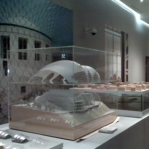

Foster + Partners: the Art of Architecture
2013 Galeri PETRONAS, Kuala Lumpur
Venice Architecture Biennale Gateway installation and Hongkong Bank
2012 Arsenale and Il Giardini, Venice
The Art of Architecture: Foster + Partners SPSI
2012 Shanghai, China
The Art of Architecture: Foster + Partners, Guadalajara
The Art of Architecture: Foster + Partners, Guadalajara
2011 Instituto Cultural Cabañas, Guadalajara, México
British Design 1948-2012 30 St Mary Axe
2011 Victoria & Albert Museum
This is Design Hongkong Bank
2011 Design Museum, London
The Art of Architecture: Foster + Partners
2011 Hong Kong Arts Centre, Hong Kong
Bucky Fuller + Spaceship Earth
2010 Ivory Press Art + Books Madrid
The Art of Architecture: Foster + Partners
2010 Museo de Arte Contemporáneo de Monterrey, México
III congreso internacional de arquitectura
2010 CONSTRUTEC | COAM Feria de Madrid
Building for Brussels. Architecture and Urban Transformation in Europe
2010 The Centre for Fine Arts, Brussels
Sustainable Futures: Can Design Make a Difference?
2010 Design Museum, London

The Art of Architecture: Foster + Partners, Mexico
2010 Antiguo Colegio de San Ildefonso México
Building for Brussels. Architecture and Urban Transformation in Europe
2010 The Centre for Fine Arts, Brussels

The Art of Architecture: Foster + Partners, Monterrey
2010 Museo de Arte Contemporáneo de Monterrey, Mexico
Bucky Fuller + Spaceship Earth
2010 Ivory Press Art + Books Madrid
The Future Has Arrived: Architecture for a Sustainable World
2009 Louisiana
London First Works: Emerging Architectural Practices of the 1960s and 70s
2009 Architectural Association, W1
The Art of Architecture
2009 Nasher Sculpture Center Dallas
Norman Foster Drawings 1958-2008
2009 Ivory Press Art + Books Madrid
Working with History : Foster + Partners
2009 Danish Architecture Center Copenhagen
Green Architecture of the Future
2009 Louisiana Museum of Modern Art
Super Contemporary
2009 Design Museum, London
The Invention of the European Tower
2009 Pavillon de l'Arsenal, Paris
Make it Work: Engineering Possibilities
2009 AIA Center for Architecture New York
Growing + Greening New York: Plan NYC 2030
2008 Museum of the City of New York
Designers' Christmas Trees
2008 Cité de l'Architecture et du Patrimoine, Paris
New Urbanity: The European City of the 21st Century
2008 DAM – German Architecture Museum, Frankfurt
Flying Colours? The Germans and Their National Symbols
2008 House of History, Berlin
Exhibition of Slussen Competition Entries
2008 Stockholm City Museum, Sweden
Tourism: Spaces of Fiction
2008 Design Centre, Spain
Japanese Junction: Exhibition of Japanese Designers
2008 Café OTA, London
Foster + Partners: Working with History
2008 Lenbachhaus Art Gallery, Germany
For the Road: European Design Tour
2008 Terminal Gallery, Hungary
London's Towns: Shaping the Polycentric City
2008 New London Architecture, London
Future Non-Future: The Contemporary Unbuilt Architecture of London
2008 Architectural Association, London
Focus Green
2008 Design Center, Germany
Glass Technology Live
2008 Glasstec Trade Show, Germany
Diverse Minds: Photographic Portraits from the Architecture Programme
2008 Royal Academy of Arts, London
11th Architecture Biennale - Out There: Architecture Beyond Buildings
2008 Venice, Italy
Airworld Daelim
2008 Contemporary Art Museum, South Korea
Architecture = Sustainability
2008 Pavillon d'Arsenal, Paris
Vertical Cities: Hong Kong / New York
2008 The Skyscraper Museum, USA
International Space Exploration Conference
2008 Scottish Exhibition and Conference Centre, Glasgow
Span: Viaducts, Bridges & Walkways
2008 Building Centre WC1
In a Chinese City: Perspectives on the Transmutation of an Empire
2008 Cite Chaillot, Paris
Build it!
2008 Redbridge Museum, Ilford
Museum Architecture in the 21st Century
2008 Museum of Modern Art, Denmark
Glass Technology Live
2008 Glasstec Trade Show, Dusseldorf
Foster + Partners : Working with History
2008 Lenbachhaus Art Museum, Munich, Germany
Third Architectural Biennial
2008 Beijing International Exhibition Centre, China
Siggraph 2008
2008 Convention Centre, USA
Skin + Bones: Parallel Practices in Fashion and Architecture
2008 Somerset House, London
Unseen Hands
2008 Victoria & Albert Museum, London
240th Summer Show
2008 Royal Academy of Arts, London
Performalism: Form, Function and Performance
2008 Museum of Arts, Tel Aviv, Israel
Cai Guo Qiang: I want to believe
2008 Guggenheim Museum, New York
China Design Now
2008 Victoria & Albert Museum, London
Labyrinthus
2008 Le Parc des Labrinthes, France
London Festival of Architecture
2008 Installation in Exhibition Road, London
Masdar City
2008 GA Gallery, Tokyo
Beyond Measure
2008 Kettle's Yard University of Cambridge
Prototypes Stiftung
2008 Brandenburger Tor, Berlin
Architecture Inside/Out
2007 Center for Architecture, New York
Away from Home New London
2007 Architecture at the Building Centre, London
Contemporary Architecture in Galicia
2007 CGAC Santiago de Compostela, Spain
Architecture and Urban Restructuring in Former East Germany
2007 Deutsches Architekturmuseum Frankfurt, Leipzig
Central Market Abu Dhabi
2007 GA Gallery, Tokyo
SHOP – New Retail Space for London
2007 New London Architecture, Building Centre, London
Sustainable London
2007 New London Architecture, Building Centre, London
Public City – Places for People
2007 New London Architecture at the Building Centre, London
High Society
2006 Deutsches Architekturmuseum Frankfurt
Biennale di Venezia
2006 Arsenale, Venice
Norman Foster: Space and Time
2006 Pushkin Museum, Moscow
Architektur + Sport
2006 Pinakothek der Moderne, Munich
The Building Centre 75th Anniversary Exhibition
2006 Information and Inspiration Building Centre, London
Norman Foster: Gliding Through Space
2006 University of Toronto
Foster and Partners: Works
2006 Glenbow Museum, Calgary
Moscow City Tower
2006 GA Gallery Tokyo

Sky High
2005 Urban Centre, Milan